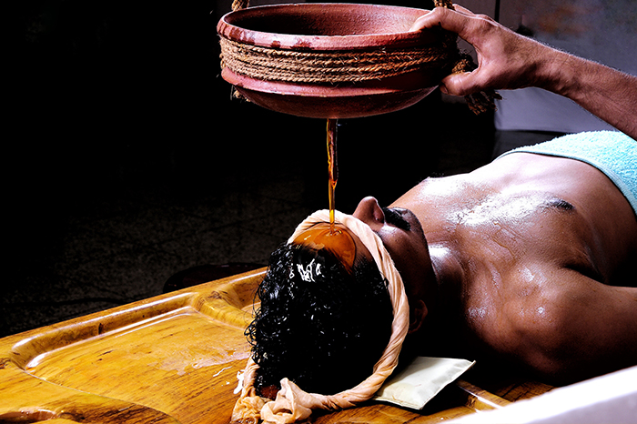
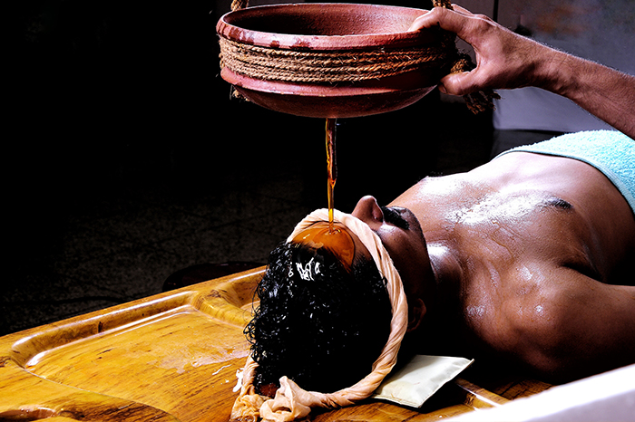
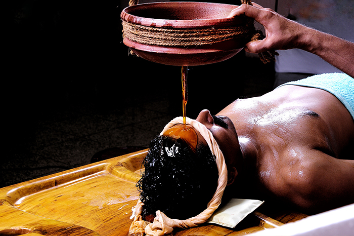

Major Attractions
 


Bounded by the Nilgiris hills on the East and the Arabian Sea on the west, the district of Malappuram literally the land atop the hills, is remarkable for its unique natural beauty. Perched among the undulating hills and the meandering rivers that flow to reach the coconut-fringed seacoast, the land conceals a unique and eventful history.
The hill country also contributed much to the cultural artistic traditions of the state. The mosques and temples of the land are known for their spectacular festivals. The land of great poets and writers, political and religious leaders, the district has carved a unique place of its own in the history of Kerala
Malappuram consist of 3 natural divisions, lowland, midland and highland. The low land stretches along the sea coast, the midland in the centre and the highland region towards the East and North eastern parts. The topography of the district is highly undulating; starting from the hill tops covered with thick forest on the East along the Nilgiris, it gradually slopes down to the valleys and the small hills, before finally ending on the sandy flat of luxuriant coconut groves in the west.
